EcoMLS: Scheduler Performance Analysis
Comparing Default, Round Robin, and Random Schedulers
Default
Round Robin
Random
Default Scheduler
Accuracy Over Time
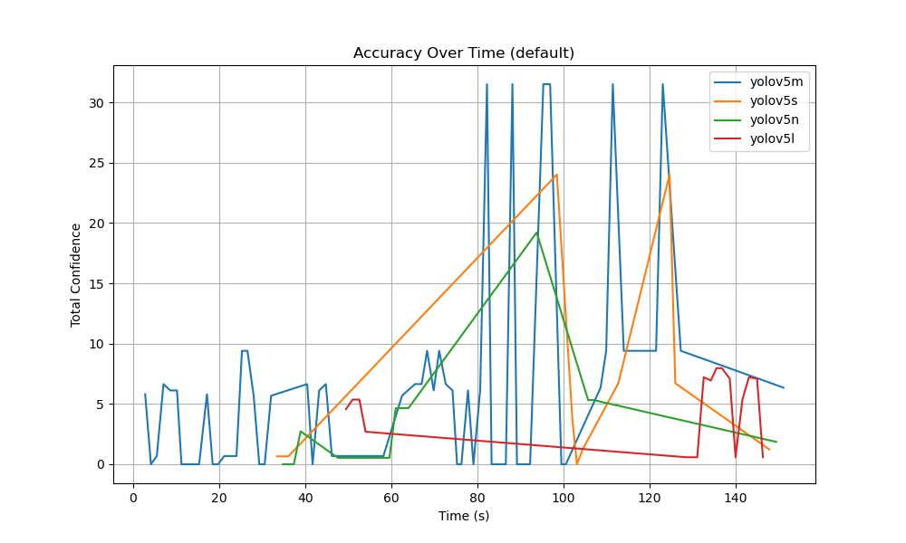
Energy Consumption Over Time
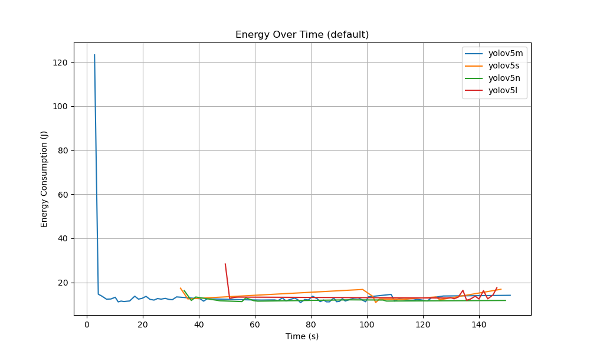
Energy Consumption vs Accuracy
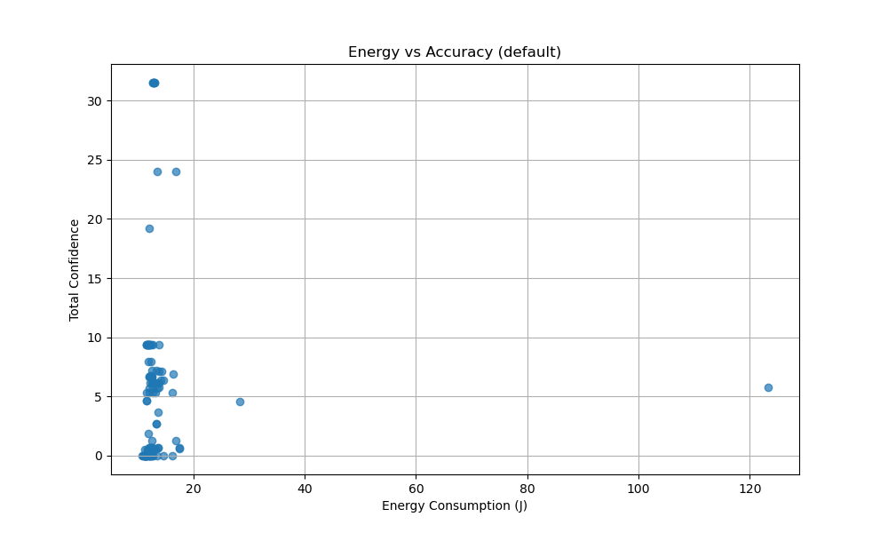
Energy vs Average Confidence Score
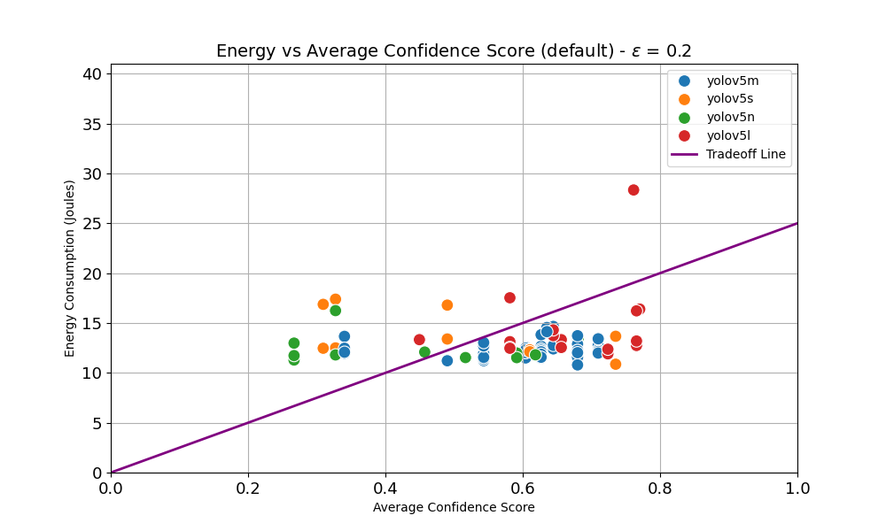
Round Robin Scheduler
Accuracy Over Time
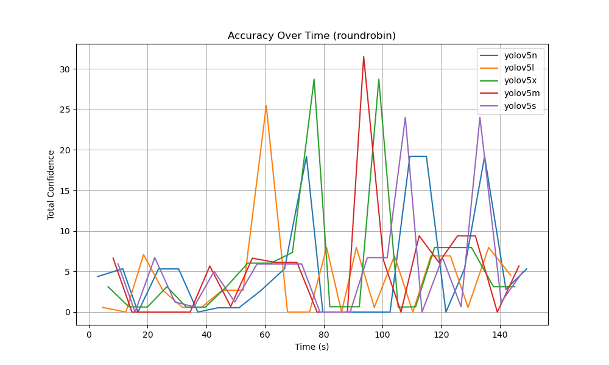
Energy Consumption Over Time
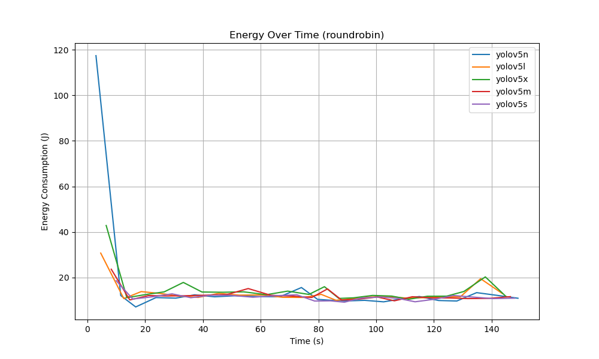
Energy Consumption vs Accuracy
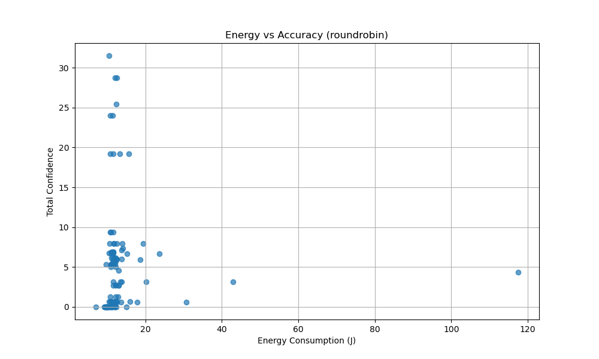
Energy vs Average Confidence Score
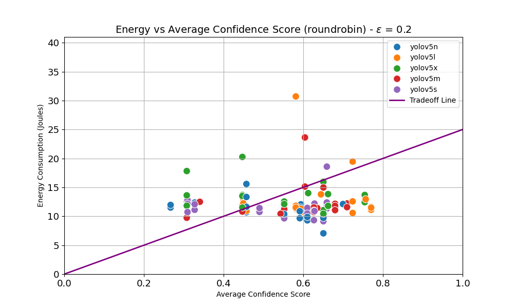
Random Scheduler
Accuracy Over Time
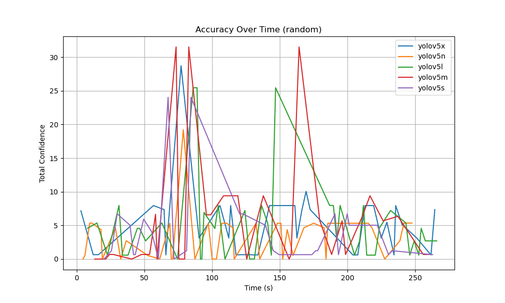
Energy Consumption Over Time
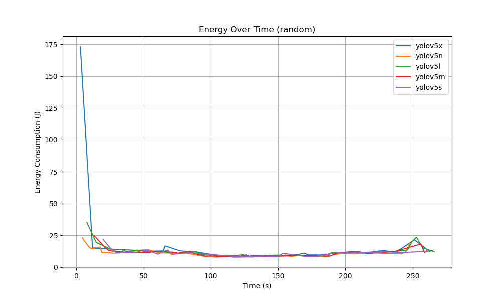
Energy Consumption vs Accuracy
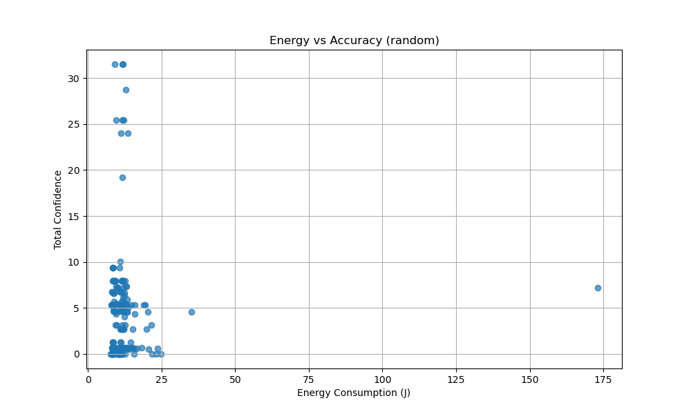
Energy vs Average Confidence Score
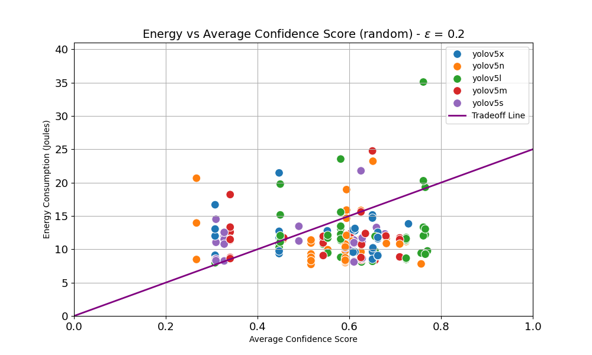